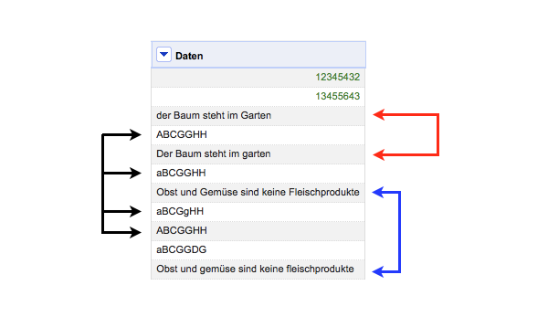
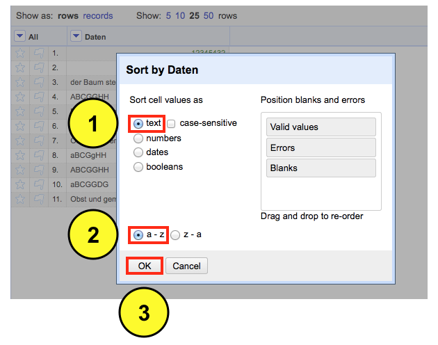
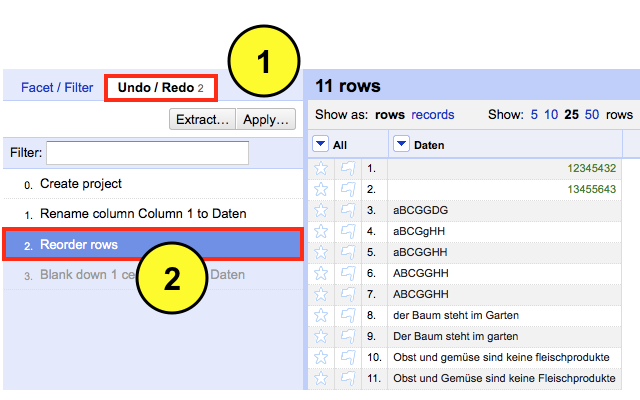
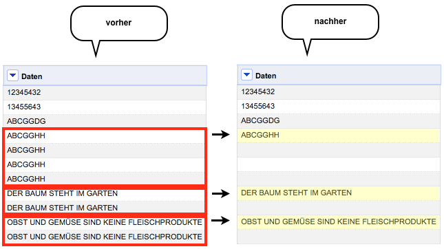
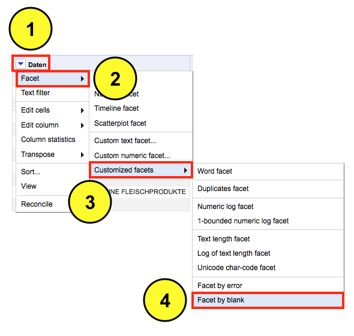
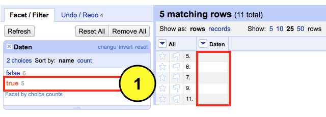

Published: 2. Februar, 2013 CONTENT NUTZUNG: CC BY-NC-SA 3.0
Bevor man mit einer Datenanalyse beginnt, sollte man den Datensatz bereinigen. Eine unterschätzte Fehlerquelle beim Umgang mit großen Datensätzen ist das "Doppelte Lottchen" - Datenzeilen mit identischen Inhalt. Insbesondere bei quantitativen Analysen können sie das Ergebnis der Auswertung verzerren. Daher ist es ratsam diese vorher zu identifizieren und gegebenenfalls zu entfernen. In OpenRefine lässt sich das wie folgt realisieren.
Das Beispiel: Mein Datensatz enthält drei Doppler – die Doppler weisen dabei Unterschiede in der Schreibweise (Groß- / Kleinschreibung) auf. Inhaltlich sind die Doppler jedoch identisch. Diese will ich nun entfernen. Dazu geh ich wie folgt vor:

Die einzelnen schritte: Ich werde zunächst die Daten sortieren. Dazu wähle ich aus dem Dropdown Menü der Spalte “Daten” die Option Sort aus.

Eine neue Eingabemaske erscheint. Hier definiere ich den Sortiermodus für den Inhalt. Da der Datensatz überwiegend Textbausteine enthält, wähle ich die Option text aus. Wenn der Datensatz nur Zahlen enthalten würde, wäre die Option numbers geeigneter. Abschließend wähle ich die Reihenfolge der Sortierung a-z und bestätige meine Auswahl mit OK.

Nach der Transformation befinden sich die Doppler untereinander. Diese Reihenfolge übernehme ich und verwerfe somit die alte. Hierzu wähle ich aus dem Dropdown Menü die Option Sort und anschließend die Auswahl Reorder rows permanently aus.

Im nächsten Schritt werde ich ich die Datenzeilen mit identischen Inhalt leeren. Dazu wähle ich aus dem Dropdown Menü der Spalte “Daten” die Option Edit cells und dann die Funktion Blank down aus.

Das Ergebnis ist mehr als unbefriedigend. Lediglich ein Doppler wurde erfolgreich entfernt. Offenbar genügt bereits eine Abweichung in der Schreibweise (Groß- / Kleinschreibung), um die Erkennung von Dopplern zunichte zu machen. Aus semiotischer Sicht mag das korrekt sein – aus semantischer Sicht allerdings unbrauchbar. Somit muss ich nun tricksen, um das gewünschte Ergebnis zu erhalten.

Ich klicke in der Menüleiste auf “Undo/Redo“, um meine letzte Transformation rückgängig zu machen. Dafür wähle ich aus dem Log die Auswahl Reorder rows.

Danach wähle ich aus dem Dropdown Menü der Spalte “Daten” die Option Edit cells, Common transforms und anschließend die Option To uppercase aus. Der Befehl transformiert den gesamten Inhalt aller Zellen in Großbuchstaben. Inhaltlich gehen dabei keine Informationen verloren.

Das Ergebnis der Transformation sieht nun so aus.

Nun werde ich erneut die Zeilen mit den identischen Einträgen leeren. Dazu wähle ich aus dem Dropdown Menü der Spalte “Daten” die Option Edit cells und anschließend den Befehl Blank down aus.
Das Ergebnis der neuen Transformation kann sich sehen lassen. Die Doppler wurden entfernt. Dafür verunreinigen nun mehrere leere Datenzeilen meinen Datensatz.

Diese werde ich im nächsten Schritt gezielt entfernen. Hierfür wähle ich aus dem Dropdown Menü der Spalte “Daten” die Option Facet, Customized facets und dann den Befehl Facet by blank aus.

In der linken Menüleiste sehe ich das Ergebnis der Prozedur. Es wurden fünf leere Datenzeilen gefunden. Durch klicken auf true aktiviere ich diese Auswahl, die ich jetzt gezielt in der Datenansicht betrachten kann.

Und so löscht man die leeren Datenzeilen – hierzu wähle ich aus dem Dropdown Menü der Spalte “All” die Option Edit rows und dann die Funktion Remove all matching rows aus. Somit werden die aktiven Datenzeilen gezielt aus dem Datensatz entfernt.

Das finale Ergebnis der Datenbereinigung sieht nun so aus. Keine Doppler oder leere Datenzeilen.